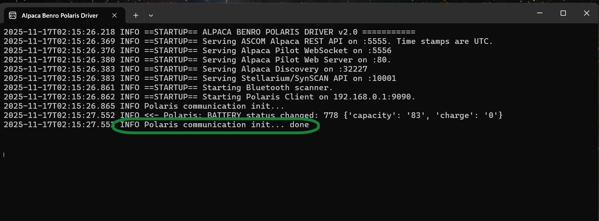
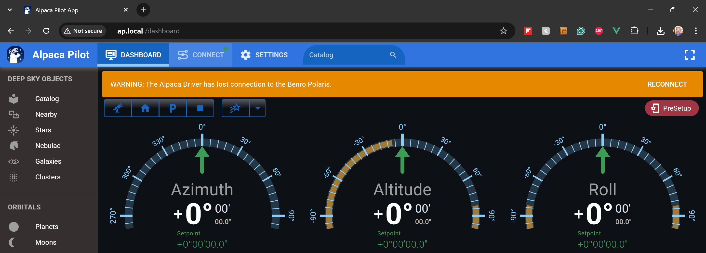

Mac Setup Guide¶
macOS Installation Video Demonstration¶
The following YouTube video demonstrates parts of the installation and setup procedure described in this guide.

Overview¶
The Alpaca Benro Polaris Driver is provided as a collection of Python scripts and is installed and run from the command line using the Terminal application. You do not need to install Python yourself. The installation procedure uses uv to install the required Python version and all the libraries needed by the driver.
Installing¶
Installing the Alpaca Benro Polaris Driver code¶
-
Download the Alpaca Driver software
Open a Terminal window, then clone the repository into a location of your choice, such as your home directory:
git clone --branch dev2_2 https://github.com/ogecko/alpaca-benro-polaris.git cd alpaca-benro-polarisNote: If this is the first time you have used
giton this Mac, macOS may prompt you to install the Xcode Command Line Tools. Accept the installation and wait for it to finish, then run thegit clonecommand again. -
Install uv
uvmanages the required Python version and all the Python libraries needed by the driver: -
Install Python and the required libraries
From within the
alpaca-benro-polarisdirectory, run:This creates a
.venvfolder containing the Python environment and everything the driver needs.Note: If the
uvcommand is not found, close and reopen Terminal. Thencdback into thealpaca-benro-polarisfolder and try again.
Running the Alpaca Benro Polaris Driver¶
-
Start the Alpaca Benro Polaris Driver
From within the
alpaca-benro-polarisdirectory, run:Note: The first time the driver runs, macOS may ask whether to allow it to accept incoming network connections. Click Allow.
-
Verify that the driver is running
The driver output should look similar to this:

Starting the Alpaca Pilot App¶
Once the Alpaca Benro Polaris Driver is running, you can access the Alpaca Pilot App from any web browser.
-
Open a web browser
Open Safari, Firefox, Chrome, or another supported web browser.
-
Open the Alpaca Pilot App
Enter the following address in the browser's address bar:
-
Verify that the app opens
The Alpaca Pilot App should display the startup screen and then switch to the dashboard.

-
(Optional) Enable HTTPS
Browser features such as Location and Clipboard access only work over a secure (HTTPS) connection. If you need these features, follow the Pilot User Guide – Using Alpaca Pilot over HTTPS to install the driver's CA certificate and switch Alpaca Pilot to HTTPS.
Connecting the Driver to Polaris¶
Before you can use the Polaris, complete the following steps.
-
Open the Connect page
Click Connect in the top toolbar of the Alpaca Pilot window. The Connect page guides you through the steps required to connect the driver to your Benro Polaris device.
-
Set up and power on the Polaris
Set up your Benro Polaris tripod head and turn on the device.
If you cannot turn on the Polaris, see Troubleshooting B1.
-
Enable and join the Polaris Wi-Fi
On the Connect page, click the Wi-Fi button next to the device dropdown. This tells the driver to enable the Polaris Wi-Fi hotspot over Bluetooth. The Polaris blue LED should light up when Wi-Fi is enabled.
Unlike Windows and Raspberry Pi, macOS does not automatically join the Polaris hotspot. Open the Wi-Fi menu, or go to System Settings > Wi-Fi, and connect to the
polaris_xxxxxxnetwork manually.Important: Connecting to the Polaris Wi-Fi network disconnects your Mac from its normal Wi-Fi network and therefore from the Internet for the duration of the session.
-
Complete the connection procedure
On the Connect page in the Alpaca Pilot App, follow each step indicated by a checkmark.
For detailed instructions, see the Pilot User Guide – Connecting Devices.
Make sure all applicable checkmarks are green. The final Multi-Point Alignment step will remain incomplete until you have successfully aligned on three or more stars.
-
Verify the connection
Once the driver has connected successfully to the Polaris, the Alpaca Driver output should indicate that the connection has been established.
Updating the Driver¶
To update the Alpaca Benro Polaris Driver to the latest version, stop the driver (Ctrl+C in its Terminal window) if it is running. Then, from within the alpaca-benro-polaris folder, run:
Then start the driver again using the command in Step 4 above.
Your existing settings and data, including alignment and calibration data, are preserved. They are stored in the data folder, which Git leaves untouched.
Troubleshooting¶
If you do not see the communications init... done message, see the Troubleshooting Guide C1 for steps to diagnose and resolve the problem.
Stellarium¶
To use the Stellarium application on macOS with its Remote Telescope control protocol, enable the Stellarium interface in the driver configuration.
-
Open the
driver/config.tomlfile. -
Set
stellarium_portto a value other than0, for example: -
Restart the Alpaca Benro Polaris Driver.
-
Configure the telescope connection in Stellarium.